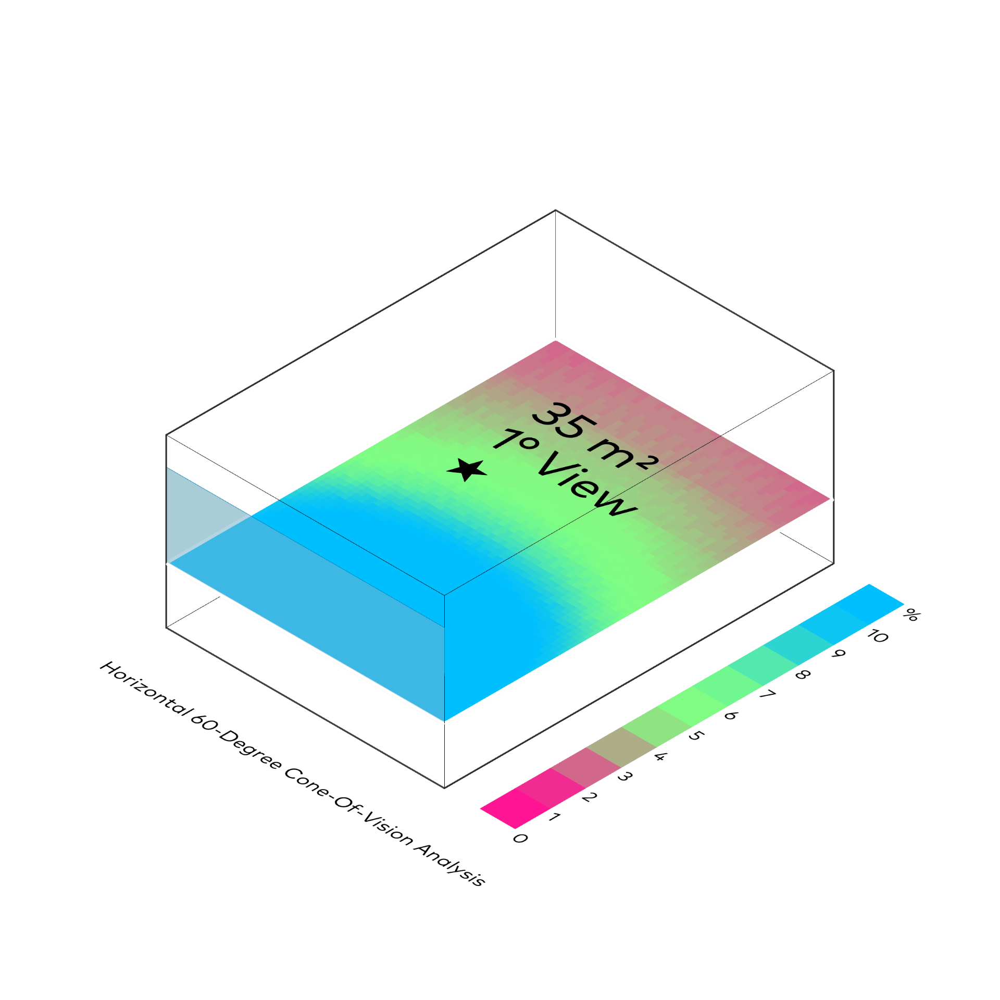
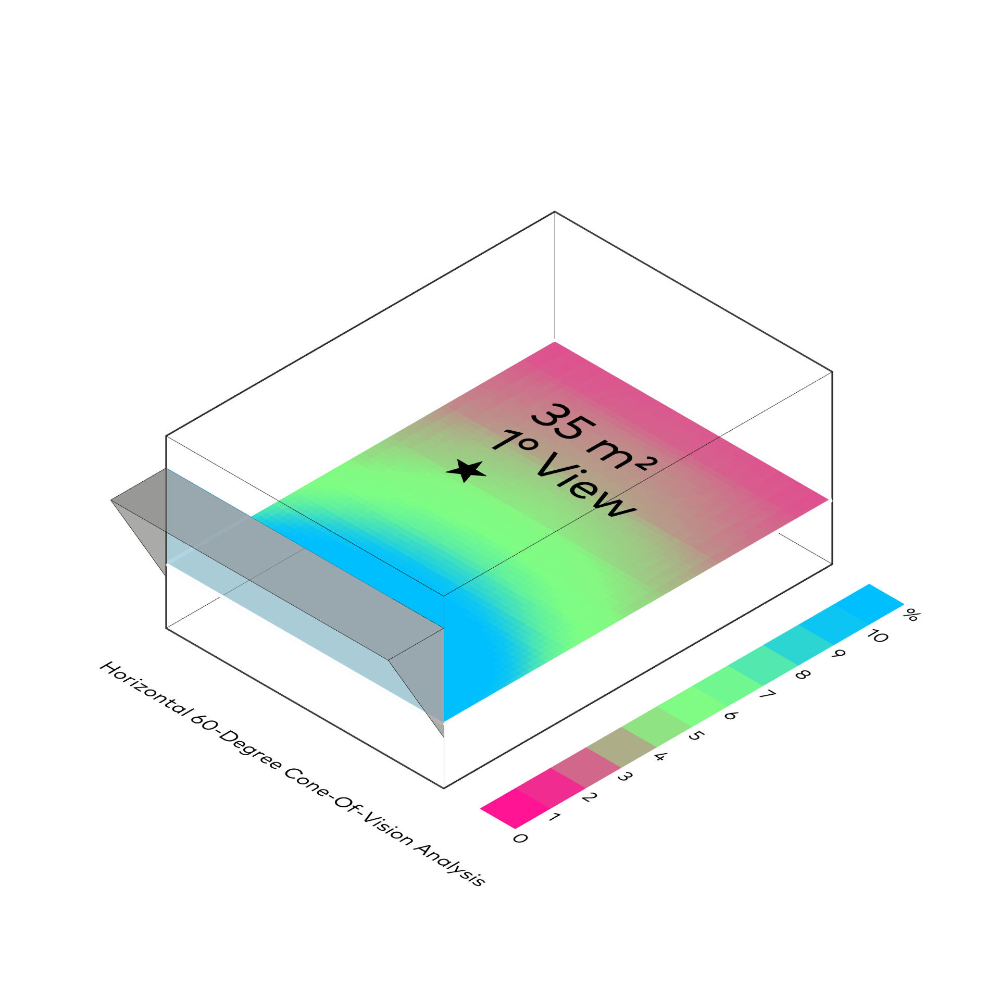
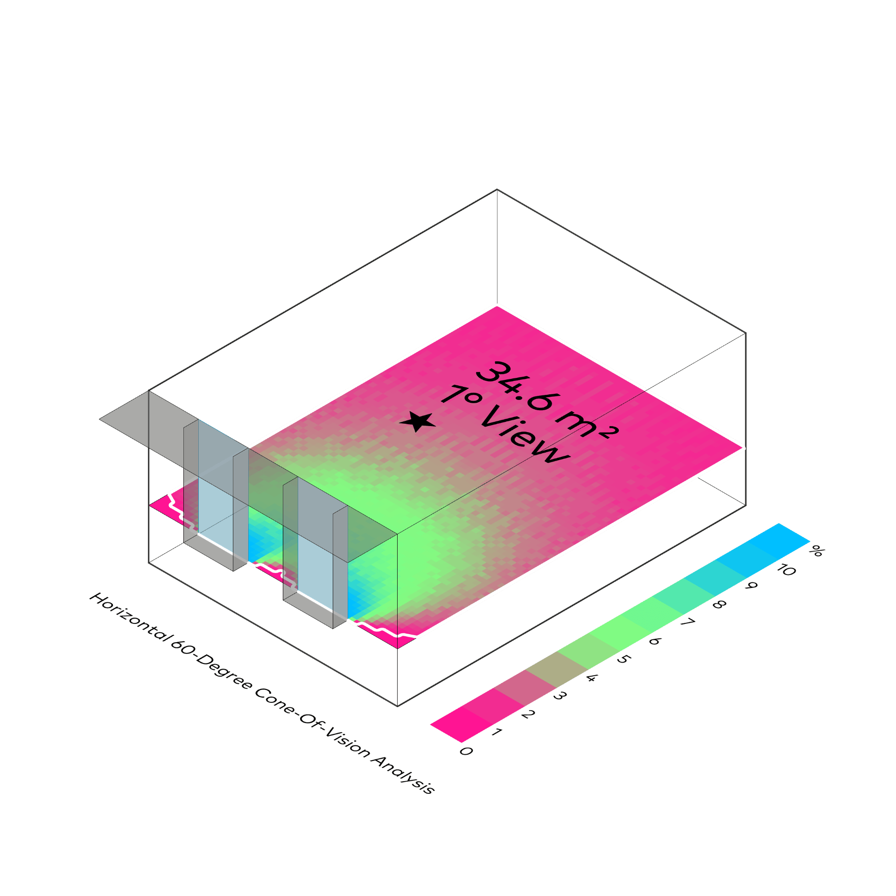

Sichtfeld
Ladybug
⬤ Ladybug quantifiziert Sichtfraktionen (View Factor) – Anteil unverbaubter Außenansicht (Himmel, Natur, Wasser) vs. verbaute Elemente (Gebäude, Infrastruktur). Fenster-spezifische Analysen für Raumhöhen und Orientierungen erfassen psychologische Wirkung auf Wohlbefinden und circadiane Rhythmen. Normgerecht nach EN 17037 und IEQ-Standards – essenzieller Faktor für urbane Lebensqualität und Innenraumkomfort.
⬤ Ladybug quantifies view factors – the proportion of unobstructed outdoor views (sky, nature, water) vs. obstructed elements (buildings, infrastructure). Window-specific analyses for room heights and orientations capture the psychological effect on well-being and circadian rhythms. Compliant with EN 17037 and IEQ standards – an essential factor for urban quality of life and interior comfort.